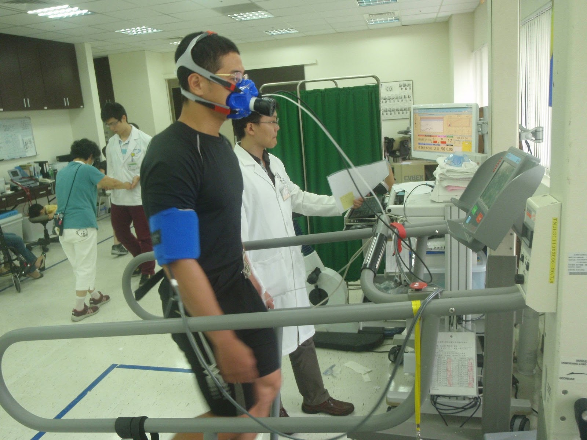

運動錶上最大攝氧量的估計值，準嗎？
前陣子有位網友在耐力問壇上問道：「Garmin 920XT 上量測出來的最大攝氧量準不準？它所計算出的最大攝氧量與輸入耐力網得到的跑力值兩者相差會有多大呢？譬如我最近 3000 公尺成績測得 10:35，得出的跑力值為 55；而 920XT 手錶所推出的最大攝氧量卻是 61，想請問這兩項彼此間是否有關聯？」
剛好最近又有人問道，所以把回覆的內容整理分享出來：
先簡單解釋一下「最大攝氧量」(VO2max)的意義，是指每分鐘每公斤體重身體所消耗的氧氣量。只要活在世上，我們無時無刻都在使用氧氣，只是身體處於靜止狀態時使用的氧氣量比較少。身體各部的總氧氣使用量會隨著運動強度而增加，一直增加到其最大值，就像每具引擎都有固定的最大進氣量一樣，每個人的身體也都有用氧氣的極限值，在運動生理學中的術語稱為「最大攝氧量（VO2max）」，它是指身體使用氧氣的最大能力，即是身體所能消耗氧氣的最大量(單位是 mL/min/kg)，亦是心肺耐力的絕對指標。
影響最大攝氧量的變數很多，像是心肺端的攝氧能力，主要包含了肺臟的功能 (肺臟的大小以及氣體擴散交換能力)、心臟與血管功能(血液幫浦與運輸量的大小)、紅血球功能(攜帶氧氣的能力)。
你可以把攝氧量想像成汽車引擎，好的引擎必需有足夠的進氣量(心肺能力)、優秀的進氣品質(紅血球的攜氧能力)，以及肌肉端的用氧能力(引擎的燃氧效能)。最後一項是什麼意思？你可以想像一下，一顆引擎每分鐘最多只能燃燒 1000 公升的氧氣，你把進氣量從 1000 公升加大到 2000 公升有沒有意義？
當然沒有。所以有些跑者只練高強度(會讓你喘到說不出話來)的訓練，不去加強肌肉端的用氧能力(LSD 的訓練目的)，最大攝氧量仍無法提升。就像汽車引擎的最大馬力是跟進氣、排氣、火星塞、汽門、活塞等零件與引擎的結構互相關聯，想要提升馬力，就要找到限制因素。
若要用比較學術方式來描述最大攝氧量，它是：心臟輸出的血液量乘上動靜脈含氧量差的最大值。在實驗室裡的測量方式是讓跑步機上的受試者戴著面罩跑步，逐漸提高跑步機的速度，用電腦分析受試者所吐出的空氣中每分鐘有多少毫升氧氣被消耗掉了(拿來跟大氣中的空氣含量相比)，這是「絕對攝氧量」，為了能夠比較，通常會除以體重，取得「相對攝氧量」。

【圖：2013 年跟跑步環島的夥伴在北醫進行身體檢查，其中一個項目就是測最大攝氧量，照片中為夥伴莊茗傑】
因此，最大攝氧量是一個需要進實驗室才能取得的數據，運動科學家或醫生們透過逐漸增加運動強度(把跑步機的速度愈調愈快)與氣體搜集分析的方式，來測量你在不同運動強度下身體分別用了多少氧氣。
因為最大攝氧量的意義實在太重要了：可以直接判別出誰的有氧引擎容量最大；也可以直接用它的百分比來定義訓練強度。然而，你我都知道，我們不可能戴著面罩隨時分析自己的攝氧量，所以進實驗室測出自己的最大攝氧量實在意義不大，因為不實用。
所以 Jack Daniels 才會利用眾多實驗數據回歸出「跑力值」(VDOT Value)。「跑力」一詞源自《丹尼爾斯博士跑步方程式》(Daniels' Running Formula)一書，作者傑克．丹尼爾斯(Jack Daniels)以此值來定義跑者的能力等級。它並不等於最大攝氧量，而是身體實際的最大攝氧量、跑步經濟性、跑者的心志毅力結合後的指標。「跑力」愈高代表你的跑步實力愈強；試想，即使兩個人進實驗室測出來的最大攝氧量一樣，但 A 跑者比 B 跑者擁有更好的跑步經濟性 (攝氧所產生的是較多的能量而非體熱)，也就是技巧比較好，因此 A 跑者的「跑力」會比 B 跑者高。你可以把它想成生理達到最大攝氧量時的跑步速度。假設兩個人有相同的最大攝氧量，一個人跑步技術比較高明或是意志較為堅韌者，他的跑力也就會比較高。
談到這邊，答案就慢慢浮現了：Garmin 920XT 所「預估」出來的最大攝氧量，大都會比跑力高。兩者差愈多，代表你的跑步技術愈差；兩者差愈少，代表跑步技巧愈高明。
因為你目前最大攝氧量的實際值只能進實驗室戴上面罩後運動到衰竭才測得出來，所以 Garmin 920XT 的最大攝氧量是預估出來的。
Garmin 跑錶中的許多科學化數據是由 Firstbeat 這家公司所研究出來的演算法來推估。花了不少時間研究了 Firstbeat 這家公司官網上的 White paper，他們的確花了不少精力才能讓最大攝氧量這個重要的量化數據具有實用價值(不然都只是在實驗室測爽的，測出來後根本不能用)。目前 Garmin、Suunto、Samsung 等跑步穿戴裝置的最大攝氧量預估功能都是由 Firstbeat 這家公司(Firstbeat Technologies Ltd. )研發出來的，因為要直接測最大攝氧量既麻煩又昂貴，最重要的是不夠即時，你無法在訓練時監控自己的攝氧量，所以他們是用心跳率和心率變異數兩個參數，再利用他們實驗所歸納出來的演算法所估算出來的。雖然是間接數據，但好處是方便、便宜又即時，而且我們不必知道實際的絕對值，我們想要知道的是比較值，也就是訓練一段時間後「數字是否有向上提升」(或是發懶停練後數字退步了多少)，所以我們不用太在意最大攝氧量的實際值是多少，重點在於每次測量都是用同一套裝備、相同的機制(演算法)與流程所跑出來的數值，實際上的絕對值多少並不重要，重要的是進步與否。
從前面我們的論述我們得出的另一個結論是：Garmin 920XT 所「預估」出來的最大攝氧量，大都會比丹尼爾斯所定義的跑力高。兩者差愈多，代表你的跑步技術愈差；兩者差愈少，代表跑步技巧愈高明。
順帶一提，還有跑者問到：「為什麼在越野跑路線上量出的最大攝氧量會比較小？」
因為在比較柔軟的越野路面上，跑起來會相對吃力一點，你的裝置並無法分辨路面的狀況，所以它會以為你的表現退步了，量測出來的數值自然比較低。